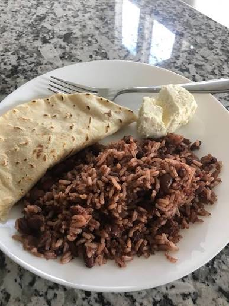
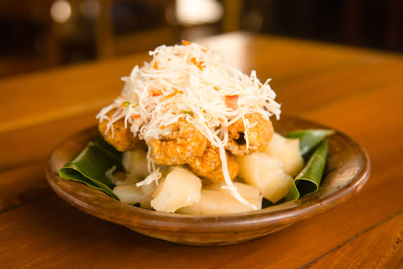
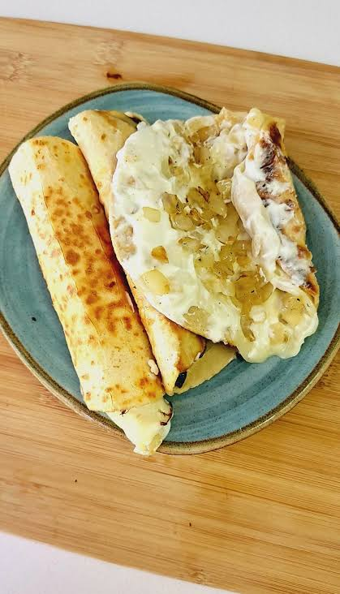
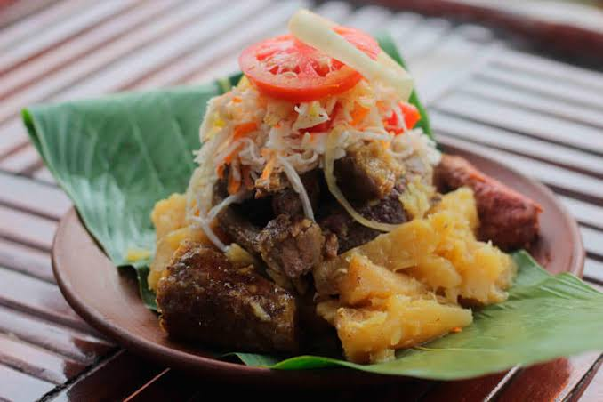
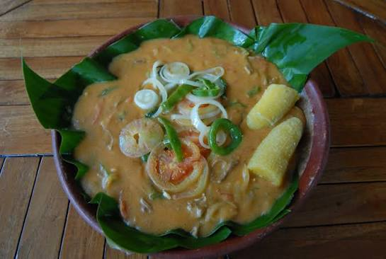

Gallo Pinto Campesino
El corazón de la mesa nicaragüense. Preparado con frijol cocido del día anterior y frito hasta dorar. Se acompaña de queso frito, maduro frito y tortilla caliente de maíz blanco.

Nacatamal de Domingo
Monumental banquete envuelto en hojas de chagüite. Relleno de tocino, papa, arroz, tomate, hierbabuena, pasas y chile congo. Cocido a fuego lento durante 5 horas.

Vigorón Granadino
Nacido bajo los laureles de la Plaza Central de Granada. Servido tradicionalmente sobre hoja de plátano fresca, aderezado con vinagre de guineo y muserola de mimbro.

Quesillo Chontaleño y de Nagarote
Manjar artesanal servido envuelto en papel plástico o chimbomba. Una explosión láctea de la cuenca ganadera de Chontales y el Pacífico occidental.

Baho Criollo
Cocinado al vapor durante la noche entera en una olla sellada con hojas de plátano. La carne se deshace al toque y el maduro aporta una dulzura acaramelada inigualable.

Indio Viejo Ancestral
Uno de los guisos prehispánicos más antiguos de América Latina. Su textura cremosa aromatizada con naranja agria y hierbabuena es símbolo de fiesta patronal campesina.
«Somos Hombres y Mujeres de Maíz»
En Nicaragua, el maíz no es un grano mercantil; es un lazo sagrado de comunión campesina. De la milpa brotan las tortillas calientes, las güirilas de Chontales con cuajada fresca, el pozol con leche, el tiste norteño, la chicha bruja y el pinolillo espumoso. Apoyar a los baqueanos es salvaguardar las semillas criollas libres de transgénicos.